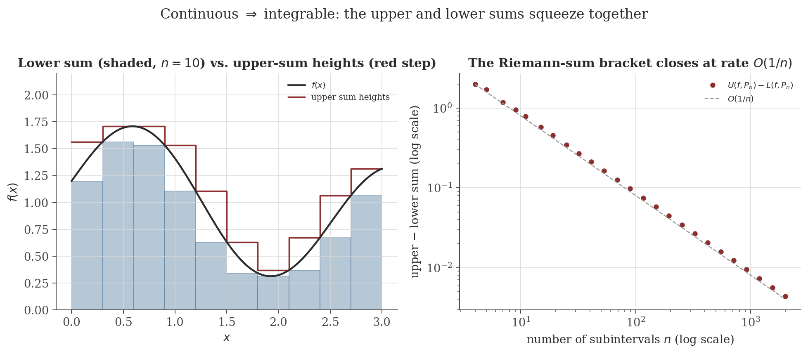
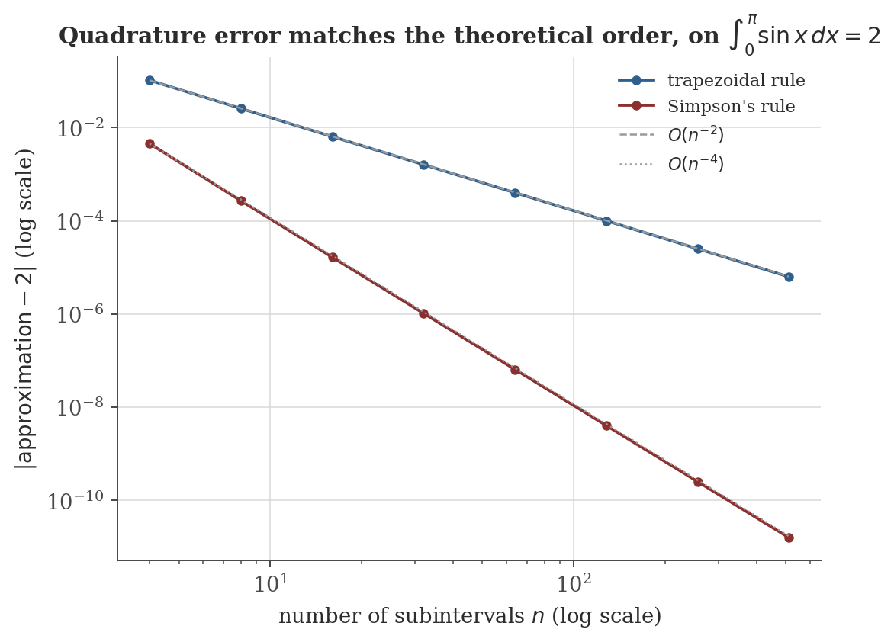

Integration
Disclaimer: These are my personal notes compiled for my own reference and learning. They may contain errors, incomplete information, or personal interpretations. While I strive for accuracy, these notes are not peer-reviewed and should not be considered authoritative sources. Please consult official textbooks, research papers, or other reliable sources for academic or professional purposes.
Contents
- Partitions and Riemann sums
- The Riemann integral and Riemann's criterion
- Continuous functions are integrable
- Linearity, monotonicity, additivity
- The Fundamental Theorem of Calculus
- Substitution and integration by parts
- Improper integrals and the comparison test
- Numerical integration
- Computation
- Common pitfalls
- Connections
- References
1. Partitions and Riemann sums
A partition $P=\{a=x_0<x_1<\cdots<x_n=b\}$ of $[a,b]$ splits it into subintervals $[x_{i-1},x_i]$. For $f$ bounded on $[a,b]$, with $m_i=\inf_{[x_{i-1},x_i]}f$ and $M_i=\sup_{[x_{i-1},x_i]}f$, define the lower and upper sums $\displaystyle L(f,P)=\sum_{i=1}^n m_i\,(x_i-x_{i-1}),\qquad U(f,P)=\sum_{i=1}^n M_i\,(x_i-x_{i-1})$.
Always $L(f,P)\leq U(f,P)$, since $m_i\leq M_i$ termwise. A partition $P'\supseteq P$ (containing every point of $P$, plus possibly more) is a refinement of $P$; refining can only tighten the bracket:
If $P'$ refines $P$, then $L(f,P)\leq L(f,P')\leq U(f,P')\leq U(f,P)$.
Splitting one subinterval $[x_{i-1},x_i]$ into two pieces replaces $m_i(x_i-x_{i-1})$ by the sum of (infimum over each smaller piece) $\times$ (its width); the infimum of $f$ over a subset is always $\geq$ the infimum of $f$ over the whole subinterval, so the replacement term is $\geq m_i(x_i-x_{i-1})$ — hence $L$ does not decrease. The symmetric argument (suprema over subsets are $\leq$ the whole) shows $U$ does not increase. Adding finitely many points is finitely many such splits.
2. The Riemann integral and Riemann's criterion
The lower and upper integrals are $\underline{\int_a^b}f=\sup_P L(f,P)$ and $\overline{\int_a^b}f=\inf_P U(f,P)$ (over all partitions $P$). $f$ is Riemann integrable on $[a,b]$ if these agree, and then $\int_a^b f=\underline{\int_a^b}f=\overline{\int_a^b}f$.
The lower integral never exceeds the upper integral (any lower sum is $\leq$ any upper sum, even for different partitions, via their common refinement and the lemma above), so integrability is exactly the statement that this one general inequality is tight.
$f$ is integrable on $[a,b]$ iff for every $\epsilon>0$ there is a partition $P$ with $U(f,P)-L(f,P)<\epsilon$.
3. Continuous functions are integrable
If $f$ is continuous on $[a,b]$, then $f$ is Riemann integrable on $[a,b]$.
This is the same "uniform" mechanism used throughout the site: a pointwise property ($f$ continuous at each point individually) is not strong enough to control a sum over the whole interval at once, but the compactness-driven upgrade to a uniform statement is — exactly as uniform continuity was needed (not mere continuity) to prove $f(x)=1/x$ fails on $(0,1)$ but a genuinely compact interval always succeeds.

4. Linearity, monotonicity, additivity
For $f,g$ integrable on $[a,b]$ and $c\in[a,b]$:
- Linearity: $\int_a^b(f+g)=\int_a^bf+\int_a^bg$ and $\int_a^b\alpha f=\alpha\int_a^bf$. (Sums of infima/suprema over a common partition bound $f+g$'s sums between those of $f$ and $g$ added together; taking the common-refinement limit as in Riemann's criterion gives equality.)
- Monotonicity: if $f\leq g$ on $[a,b]$, then $\int_a^bf\leq\int_a^bg$. (Every lower sum of $f$ is $\leq$ the corresponding lower sum of $g$, termwise, since $m_i(f)\leq m_i(g)$.)
- Additivity: $\int_a^bf=\int_a^cf+\int_c^bf$. (Any partition of $[a,b]$ refines to one that includes $c$; splitting there splits every upper/lower sum accordingly.)
- Triangle inequality: $\left|\int_a^bf\right|\leq\int_a^b|f|$. Since $-|f|\leq f\leq|f|$, monotonicity gives $-\int_a^b|f|\leq\int_a^bf\leq\int_a^b|f|$.
None of these are re-derived in full $\epsilon$-bookkeeping detail here — each is a short argument directly from the definitions in Sections 1–2, in the same spirit as the algebra-of-limits proofs in the continuity note, Section 3.
5. The Fundamental Theorem of Calculus
Let $f$ be integrable on $[a,b]$ and $F(x)=\int_a^xf(t)\,dt$. Then $F$ is continuous on $[a,b]$; and if $f$ is continuous at $x_0\in[a,b]$, then $F$ is differentiable at $x_0$ with $F'(x_0)=f(x_0)$.
If $g$ is continuous on $[a,b]$, differentiable on $(a,b)$, and $g'\equiv0$ there, then $g$ is constant on $[a,b]$.
If $f$ is continuous on $[a,b]$ and $F'=f$ on $[a,b]$ for some $F$, then $\displaystyle\int_a^bf(x)\,dx=F(b)-F(a)$.
Part 1 and Part 2 say, respectively, that integration followed by differentiation returns the original function (at points of continuity), and that differentiation followed by integration returns the original function up to the additive constant fixed by evaluating at the left endpoint — integration and differentiation are, in this precise sense, mutually inverse operations.
6. Substitution and integration by parts
Both standard techniques are corollaries of the FTC combined with the corresponding differentiation rule, not independent facts requiring their own proof machinery.
If $g$ is differentiable with continuous derivative on $[a,b]$, and $f$ is continuous on the range of $g$, then $\displaystyle\int_a^bf(g(x))g'(x)\,dx=\int_{g(a)}^{g(b)}f(u)\,du$.
If $u,v$ are differentiable with continuous derivatives on $[a,b]$, then $\displaystyle\int_a^bu(x)v'(x)\,dx=\big[u(x)v(x)\big]_a^b-\int_a^bu'(x)v(x)\,dx$.
7. Improper integrals and the comparison test
$\displaystyle\int_a^\infty f(x)\,dx=\lim_{b\to\infty}\int_a^bf(x)\,dx$, said to converge if the limit exists (finite), diverge otherwise. Integrals over unbounded functions on a finite interval are defined the same way, as a limit of proper integrals avoiding the singularity.
If $0\leq f(x)\leq g(x)$ for $x\geq a$ and $\int_a^\infty g$ converges, then $\int_a^\infty f$ converges, with $\int_a^\infty f\leq\int_a^\infty g$.
This is exactly the mechanism behind the integral test proved in the sequences and series note (Section 6): that proof sandwiches a series' partial sums between two values of $\int_1^Nf$, using that a positive continuous $f$ is integrable (Section 3 here) so the sandwiching integrals are well defined, and then invokes the same monotone-bounded-implies-convergent principle used above, restricted to the integer sequence $N=1,2,3,\ldots$ rather than a continuous limit $b\to\infty$. The classic application is the $p$-integral: $\int_1^\infty x^{-p}\,dx=\frac{1}{p-1}$ for $p>1$ and diverges for $p\leq1$ (direct computation via Part 2, or the limiting case $p=1$ giving $\ln b\to\infty$) — precisely the comparison benchmark the integral test uses to settle the $p$-series.
8. Numerical integration
When no closed-form antiderivative is available (or convenient), $\int_a^bf$ is approximated by evaluating $f$ at finitely many points. With $n$ equal subintervals of width $h=(b-a)/n$ and nodes $x_i=a+ih$:
$\displaystyle\int_a^bf(x)\,dx\approx\frac h2\Big[f(x_0)+2f(x_1)+\cdots+2f(x_{n-1})+f(x_n)\Big]$, with error $-\dfrac{(b-a)h^2}{12}f''(\xi)$ for some $\xi\in(a,b)$, when $f\in C^2$.
(even $n$) $\displaystyle\int_a^bf(x)\,dx\approx\frac h3\Big[f(x_0)+4f(x_1)+2f(x_2)+\cdots+4f(x_{n-1})+f(x_n)\Big]$, with error $-\dfrac{(b-a)h^4}{180}f^{(4)}(\xi)$ for some $\xi\in(a,b)$, when $f\in C^4$.
Both rules replace $f$ on each small piece by an interpolating polynomial (linear for the trapezoidal rule, quadratic for Simpson's, fit through three consecutive nodes) and integrate that polynomial exactly; the stated error terms are proved by applying Taylor's theorem with Lagrange remainder (differentiation note, Section 9) to the interpolation error on each piece and summing — not re-derived here, but exactly the same mechanism (a factorial-decaying remainder controlling a polynomial approximation's error) as that section's Taylor-polynomial figure. The exponents are the headline fact: trapezoidal error is $O(h^2)$, Simpson's is $O(h^4)$ — a quadratic fit interpolating one extra point buys two extra powers of $h$, not one, because Simpson's rule is exact for cubics too (the odd-order interpolation error term cancels by symmetry around the midpoint), not just the quadratics it was built to fit exactly.

9. Computation
The figures above are generated by integration/generate_figures.py. The snippet below reproduces the quadrature convergence data.
import numpy as np
def trapezoidal(f, a, b, n):
x = np.linspace(a, b, n + 1)
y = f(x)
h = (b - a) / n
return h * (y[0] / 2 + y[1:-1].sum() + y[-1] / 2)
def simpson(f, a, b, n):
if n % 2 == 1:
n += 1
x = np.linspace(a, b, n + 1)
y = f(x)
h = (b - a) / n
return h / 3 * (y[0] + y[-1] + 4 * y[1:-1:2].sum() + 2 * y[2:-1:2].sum())
f = np.sin
a, b = 0.0, np.pi
exact = 2.0
for n in [4, 8, 16, 32, 64, 128]:
t = trapezoidal(f, a, b, n)
s = simpson(f, a, b, n)
print(f"n={n:4d} trapezoidal err={abs(t-exact):.3e} simpson err={abs(s-exact):.3e}")
Actual output:
n= 4 trapezoidal err=1.039e-01 simpson err=4.560e-03
n= 8 trapezoidal err=2.577e-02 simpson err=2.692e-04
n= 16 trapezoidal err=6.430e-03 simpson err=1.659e-05
n= 32 trapezoidal err=1.607e-03 simpson err=1.033e-06
n= 64 trapezoidal err=4.016e-04 simpson err=6.453e-08
n= 128 trapezoidal err=1.004e-04 simpson err=4.032e-09Each doubling of $n$ divides the trapezoidal error by almost exactly $4$ ($2^2$) and Simpson's error by almost exactly $16$ ($2^4$) — the $O(h^2)$ and $O(h^4)$ orders read directly off the ratios, not just off the log-log slope in the figure.
10. Common pitfalls
The step function $f(x)=0$ for $x<1$, $f(x)=1$ for $x\geq1$ on $[0,2]$ is discontinuous at $x=1$ but perfectly integrable: for a partition with the single subinterval containing $1$ shrunk to width $\eta$, $U(f,P)-L(f,P)=1\cdot\eta$ (every other subinterval has $M_i=m_i$), which $\to0$ as $\eta\to0$. Riemann's criterion is satisfied despite the discontinuity — integrability is a strictly weaker requirement than continuity, the same asymmetry as differentiable vs. $C^1$ in the differentiation note (Section 2).
Let $f(x)=\operatorname{sign}(x)$ on $[-1,1]$ ($-1,0,1$ for $x<0,=0,>0$) and $F(x)=\int_{-1}^xf(t)\,dt$. Direct computation gives $F(x)=-(x+1)$ for $x\leq0$ and $F(x)=x-1$ for $x\geq0$ — that is, $F(x)=|x|-1$, exactly the corner function from the differentiation note's continuous-but-not-differentiable example. $F$ is continuous everywhere (as Part 1 guarantees unconditionally), but not differentiable at $x=0$, precisely the point where $f$ jumps. FTC Part 1's differentiability conclusion is local to points of continuity of $f$; it says nothing at a jump.
Let $f$ be $0$ everywhere except narrow triangular spikes of height $1$ centered at each integer $n\geq1$, with base width $1/n^2$. The area of the $n$-th spike is $\frac12\cdot\frac1{n^2}$, so $\int_1^\infty f=\frac12\sum_{n\geq1}\frac1{n^2}$ converges (a $p$-integral-type comparison, $p=2$). Yet $f(x)$ does not tend to $0$: it reaches height $1$ at every integer, forever. This is the integral analogue of the sequences and series note's warning that the divergence test's converse fails for series, and of the sliding-bump pointwise-but-not-uniform-limit example in the convergence note (Section 4) — three versions of the same fact, that an integral (or a sum) can stay finite even while the thing being integrated (or summed) refuses to settle down.
For $\int_0^2 2xe^{x^2}\,dx$ with $u=x^2$, $du=2x\,dx$: the correct limits transform too, $x:0\to2\Rightarrow u:0\to4$, giving $\int_0^4e^u\,du=e^4-1\approx53.6$. Reusing the original $x$-limits as if they were $u$-limits gives the different (wrong) value $\int_0^2e^u\,du=e^2-1\approx6.39$. Substitution in a definite integral (Section 6) is a statement about the transformed limits $g(a),g(b)$, not the original $a,b$ — skipping that step is a common and entirely avoidable arithmetic error, not a subtlety of the theorem itself.
11. Connections
- Continuity and limits. Uniform continuity and the Extreme Value Theorem on a compact interval are exactly what make continuous functions integrable (Section 3); the FTC Part 1 pitfall above reproduces that note's discontinuity taxonomy at one remove — a jump in $f$ becomes a corner (not a break) in its antiderivative $F$.
- Differentiation. The FTC (Section 5) is precisely the statement that integration and differentiation invert each other; its Part 2 proof leans on the Mean Value Theorem via the zero-derivative-implies-constant lemma, and the numerical integration error bounds (Section 8) are a direct application of that note's Taylor's theorem with Lagrange remainder.
- Sequences and series. The comparison test for improper integrals (Section 7) is the same monotone-bounded-implies-convergent argument as that note's Monotone Convergence Theorem, run over a continuous parameter instead of an integer index; it is the mechanism underneath that note's proof of the integral test, which in turn needs this note's Section 3 to know the relevant integrals are well defined in the first place.
- Convergence of function sequences. The spike-integrand pitfall above (Section 10) is a continuous cousin of that note's sliding-bump counterexample, both showing that pointwise smallness of a limit and finiteness of an integral (or sum) are logically independent facts.
12. References
- Rudin, W. (1976). Principles of Mathematical Analysis (3rd ed.). McGraw-Hill.
- Apostol, T. M. (1967). Calculus, Volume 1 (2nd ed.). Wiley.
- Spivak, M. (2008). Calculus (4th ed.). Publish or Perish.
- Burden, R. L., & Faires, J. D. (2010). Numerical Analysis (9th ed.). Brooks/Cole.